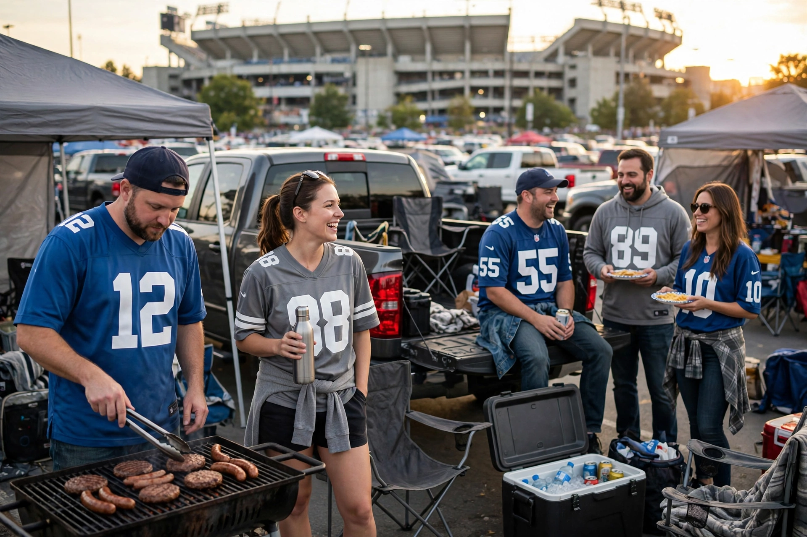

The Three Windows of an NFL Sunday
An NFL Sunday is not one long block of football. It is three windows, each with its own feel, and knowing them is the difference between a relaxed day and a day spent rushing between channels.
The first window opens at 1 PM Eastern. This is the biggest group of games, often seven or eight of them at the same time. Most fans pick one to watch properly and check the scores of the rest on their phone. The second window starts around 4 PM Eastern, with a smaller set of games, usually three or four. By then you know which of the early games are close and worth keeping an eye on. The third window is Sunday Night Football at 8 PM Eastern, one game, the whole country watching, and the perfect way to end the day.
Once you have these three times in your head, the schedule reads itself. You never have to wonder when your team plays. You look at the window, and you are done.
Start With Your Team, Then Add One More Game
The mistake most fans make on Sunday is trying to follow everything. You cannot watch eight games at once and enjoy any of them. Pick your team first. That is the game you watch from start to finish. Then pick one more game, the one with the best matchup or the closest score, and let that be your second screen.
The rest of the games are for the phone. Check the scores at the end of each quarter, or when your main game goes to a break. You will still know everything that happened by the end of the day, and you will actually remember the game you watched.
Thursday and Monday Belong to the Night Games
Sunday gets the attention, but the week has two more prime-time games that are easy to forget. Thursday Night Football streams on Amazon Prime Video, and Monday Night Football airs on ESPN. Both start at 8 PM Eastern, and both are single games, so the whole evening is about one matchup.
These night games are simple to plan. There is no choice to make, no second screen to juggle. Put the game on at 8 PM Eastern, and that is your evening. The only thing to check is whether the game you want is on Thursday or Monday, and the schedule will tell you that in one line.
Which Channel Is My Game On?
The channel question is the one fans ask most, and the answer follows the day of the week. Sunday afternoon games air on CBS or Fox, depending on the teams. Sunday night games air on NBC. Monday night games air on ESPN. Thursday night games stream on Amazon Prime Video. NFL Plus covers replays and mobile viewing.
In practice, the rule is even simpler than it sounds. If it is Sunday afternoon, check CBS or Fox. If it is Sunday night, it is NBC. If it is Monday night, it is ESPN. If it is Thursday night, open Amazon Prime Video. The schedule shows the day and the time, and the day and time give you the channel.
Plan Your Sunday in Ten Minutes on Saturday
- Saturday evening: open the schedule and look at Sunday only. Circle the 1 PM game you will watch and note the 4 PM games worth checking.
- Write the times down in your own time zone. A 1 PM Eastern kickoff is noon in Chicago, 11 AM in Denver, and 10 AM in Los Angeles.
- Set one reminder for 12.45 PM Eastern, so you are settled before the first kickoff instead of scrambling for the channel at 1 PM.
- Check once on Sunday morning. Late injuries, weather delays, and flex scheduling can move a game, and the morning check catches all of it.
Ten minutes on Saturday saves you from checking the schedule a dozen times on Sunday. It also means you spend Sunday watching football instead of reading about it.
Three Sunday Mistakes to Avoid
First, trusting last week's times. Start times change with the season and with television. A game that kicked off at 1 PM last month can kick off at 4 PM this month. Check the day itself, every week.
Second, forgetting the time zone. A 1 PM Eastern kickoff is 10 AM Pacific. Fans on the West Coast have missed the first quarter more than once by reading the Eastern time as their own.
Third, watching five games at once. When eight games start at 1 PM Eastern, pick one. The red zone channel exists for the highlights, and your phone exists for the scores. You will enjoy one game far more than half-watching five.

Frequently Asked Questions
What time do NFL games start on Sunday?
Early games start at 1 PM Eastern, late games start around 4 PM Eastern, and Sunday Night Football starts at 8 PM Eastern. Thursday and Monday night games also start at 8 PM Eastern.
Do I need an account to check the schedule?
No. Checking a schedule is free and needs no account. Watching a live game through an official broadcaster may need its own subscription.
Why did my game move to a different time?
Because the league flexes games late in the season to put the best matchups in prime time. A game can move from 1 PM to 4 PM Eastern, or into the Sunday night slot. Check the schedule on the day itself.